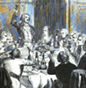
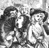

Collective Biographies of WomenAn Annotated Bibliography
Alison Booth
797.
Thomson, Mrs. A. T. [Katherine Byerley] [1797-1862]. The Queens of Society. By Grace and Philip Wharton [pseud.] Illustrated by Charles Altamont Doyle and the Brothers Dalziel. 2 vols., London, 1860. New York: Harper, 1860; 1861. London and New York: Routledge, 1867; 1870; 1872; 1876. 2d ed., 2 vols., New York: Stokes; Worthington; London: Jarvis; Philadelphia: Porter & Coates, Coates, 1890.
Search OCLC WorldCat for this title.
Search Google Books for this title.
Thomson, Mrs. A. T. [Katherine Byerley] [1797-1862]. The Queens of Society. By Grace and Philip Wharton [pseud.] Illustrated by Charles Altamont Doyle and the Brothers Dalziel. 2 vols., London, 1860. New York: Harper, 1860; 1861. London and New York: Routledge, 1867; 1870; 1872; 1876. 2d ed., 2 vols., New York: Stokes; Worthington; London: Jarvis; Philadelphia: Porter & Coates, Coates, 1890.
TOC: Sarah, Duchess of Marlborough; Mme Roland; Lady Mary Wortley Montagu; Georgiana, Duchess of Devonshire; Letitia Elizabeth Landon (LEL); Mme de Sévigné; Sydney, Lady Morgan; Jane, Duchess of Gordon; Mme Récamier; Lady Hervey; Mme de Staël; Mrs. Thrale Piozzi; Lady Caroline Lamb; Anne Seymour Damer; La Marquise du Deffand; Elizabeth Montagu; Mary, Countess of Pembroke; La Marquise de Maintenon. .
-
 Lady Mary, Pope, and Kneller, The Portrait Scene
Lady Mary, Pope, and Kneller, The Portrait Scene -
 The Duchess of Marlborough pleading her own case
The Duchess of Marlborough pleading her own case -
The Inauguration of the Republic
-
The Beautiful Duchess of Devonshire, a Kiss for a Vote
-
 The Poet's Exile-- L.E.L. at Cafe Coast Castle
The Poet's Exile-- L.E.L. at Cafe Coast Castle -
 The Hotel de Rambouillet
The Hotel de Rambouillet -
 The Counterfeit Lady Morgan
The Counterfeit Lady Morgan
Search OCLC WorldCat for this title.
Search Google Books for this title.